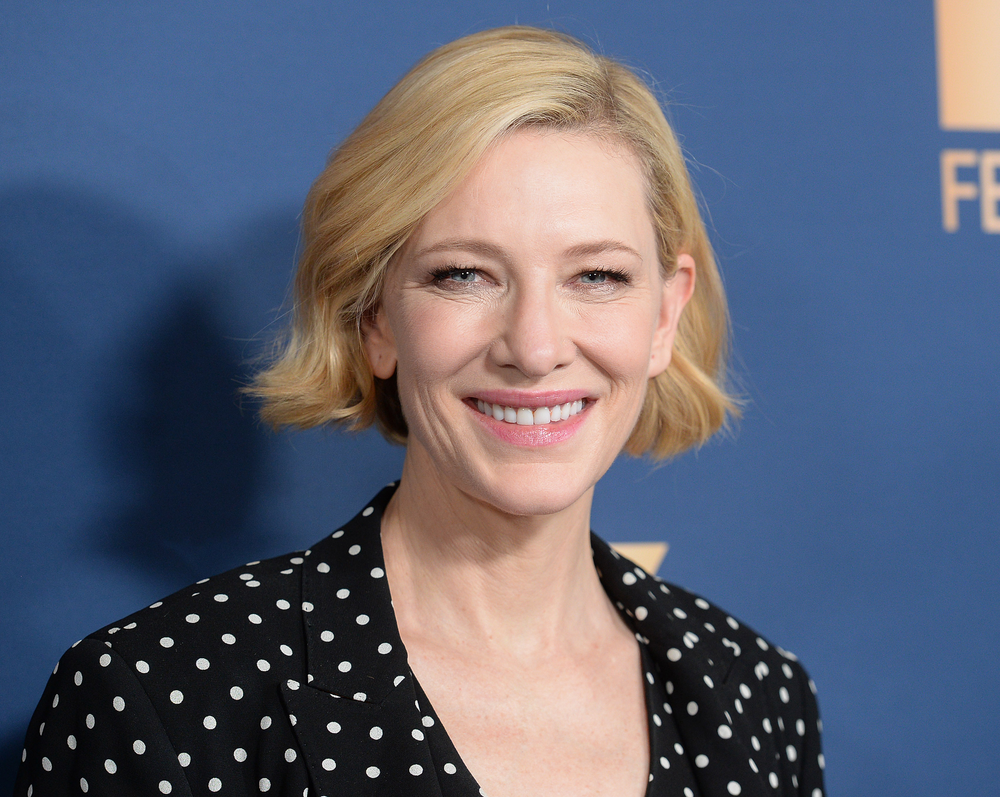

Cate Elise Blanchett is an Australian actress. One of Australia's most accomplished actors, she is known for her roles in both blockbusters and independent films and has received numerous accolades, including two Academy Awards, three Golden Globe Awards, and three British Academy Film Awards.
Blanchett has described herself as being "part extrovert, part wallflower" during childhood During her teenage years she had a penchant for dressing in traditionally masculine clothing, and went through goth and punk phases, at one point shaving her head.